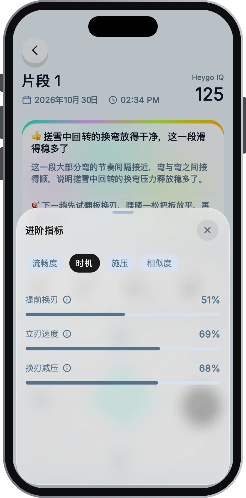
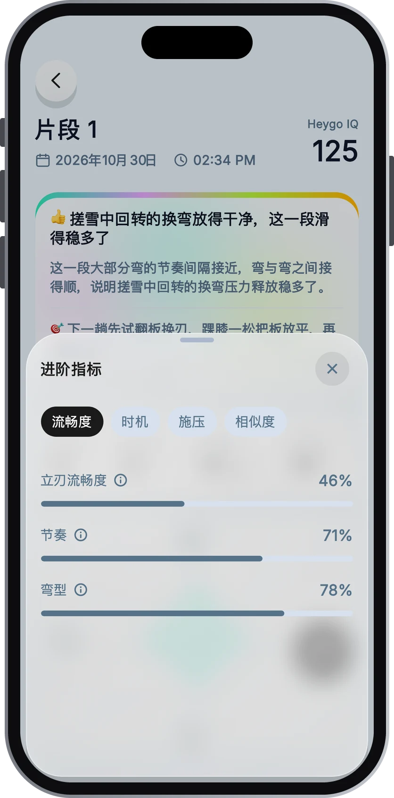
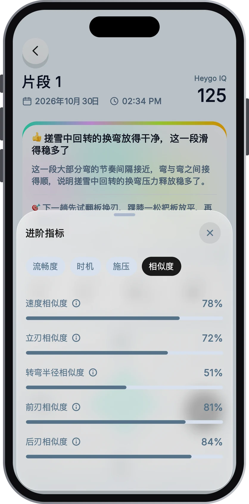

Heygo 测什么
一个总分，四个维度，读懂每一个弯
每一段滑行都会得到一个 Heygo IQ。它由时机、施压、流畅度、相似度四个维度组成，每个维度下面是可以点开细看的进阶指标，全部来自你双脚的真实动作。
HEYGO IQ12510 月 30 日 · 当天最佳一段
≈
133时机
122施压
138流畅度
111相似度
四个维度的平均分是 126，和总分 125 基本一致。哪个维度拖了后腿，一眼就能看出来。
总分怎么算
时机 26%施压 28%流畅度 22%弯与弯的一致性 6%难度（坡度、立刃角） 18%
搓雪时，弯与弯之间是否一致也算进总分。
时机 25%施压 27%流畅度 25%难度（坡度、立刃角） 23%
走刃时更看重弯型和负荷，前后刃相似度不计入总分，只体现在相似度这个维度上。
时机 133 · 该换刃的时候换没换、换得够不够早。
提前换刃
这一段 51占时机维度 31%
在板头冲向滚落线之前有多早完成换刃。越早，上半弧越完整，弯中越好控速。
立刃速度
这一段 69占时机维度 31%
换刃后刃角建立得快不快、稳不稳。
换刃减压
这一段 68占时机维度 38%
换刃时旧弯的压力有没有及时、平顺地放掉。
施压 122 · 弯中压力给得稳不稳、够不够。
离心力
这一段 1.3g占施压维度 53%
弯中承受的负荷有多大。速度和刃角都到位，负荷才上得去。
转向速度
这一段 65占施压维度 22%
雪板在弯内改变方向的快慢，是否和目标弯型匹配。
弯型闭合
这一段 72占施压维度 13%
出弯时有没有横切滚落线，用完整弯型自然控速。
施压质量
这一段 45占施压维度 11%
整个弯里压力施加和释放是否连续、集中、可重复。
流畅度 138 · 动作连不连贯、弯与弯之间接得顺不顺。
弯型
这一段 78占流畅度维度 55%
弯是不是圆润饱满的 C 形，而不是直冲后急甩。
立刃流畅度
这一段 46占流畅度维度 33%
从放平、立刃到释放，刃角变化是不是一条顺滑的曲线。
节奏
这一段 71占流畅度维度 12%
连续弯的时长和幅度是否均匀。
相似度 111 · 前刃和后刃是否一样好、每个弯是否稳定可重复。
立刃相似度
这一段 72占相似度维度 40%
前刃和后刃的立刃方式是否接近。
速度相似度
这一段 78占相似度维度 33%
前刃弯和后刃弯的速度是否接近。
转弯半径相似度
这一段 50占相似度维度 27%
前刃弯和后刃弯的半径是否接近，线路会不会往一侧漂。
App 里还会单独展示前刃相似度、后刃相似度，帮你看清哪一侧更不稳定。这两项只作展示，不参与打分。
维度内各指标的配比在所有动作下都一样；总分会按走刃或搓雪换一套权重。所有数字都来自同一位滑手 10 月 30 日的真实一段。



